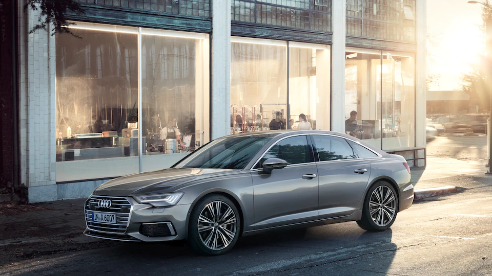
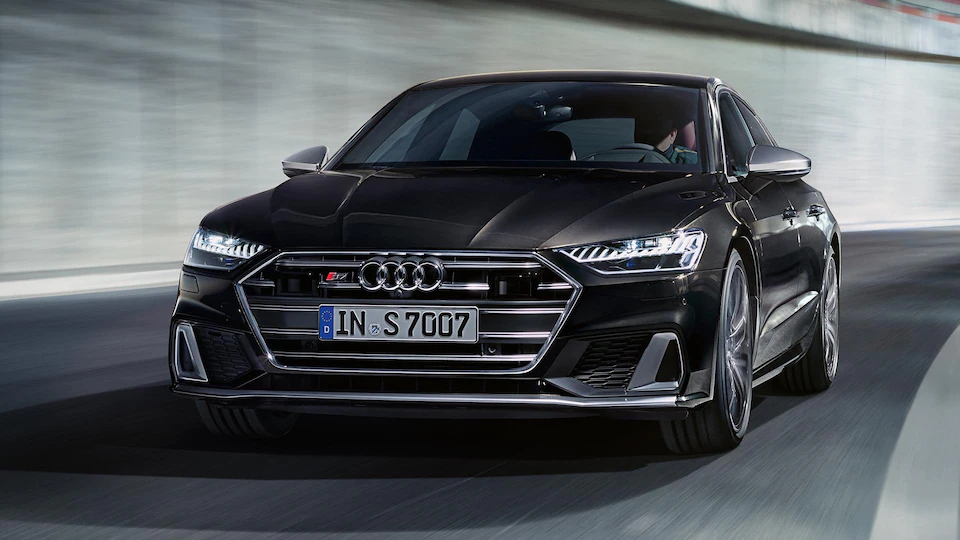
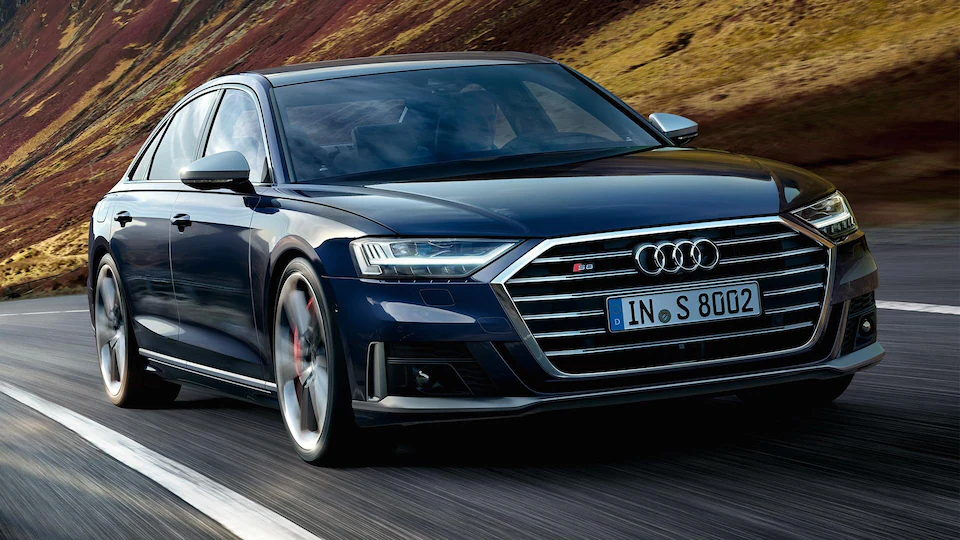
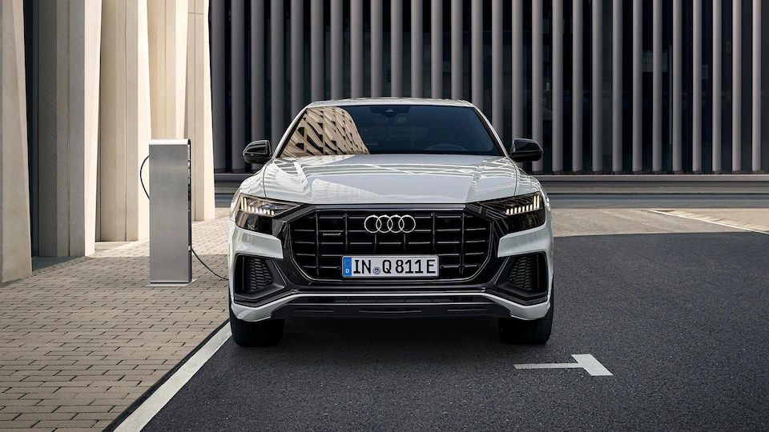
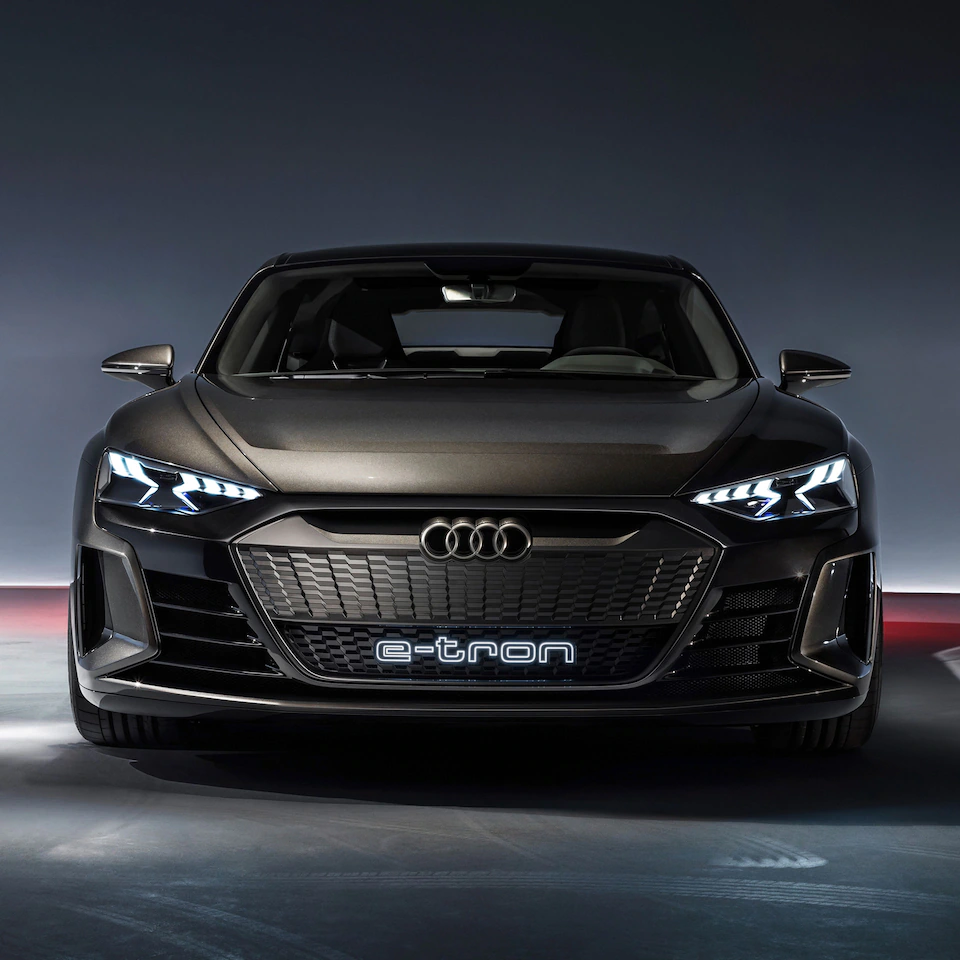

The A6 allroad quattro allows drivers to go offroad. The S6 Sedan TDI and S6 Avant TDI offer plenty of extra sportiness.

the Audi A7 Sportback TFSI e variant is driven strongly by innovation. The Audi S7 Sportback TDI stands out for its sportiness.

the Audi A8 60 TFSI e quattro an innovative drive option, and the Audi S8 TFSI enhanced sportiness.

The Audi Q8 combines the elegance of a four-door luxury coupé with the versatility of an SUV. The sporty interior conveys luxurious charm

The Audi Q8 combines the elegance of a four-door luxury coupé with the versatility of an SUV. The sporty interior conveys luxurious charm